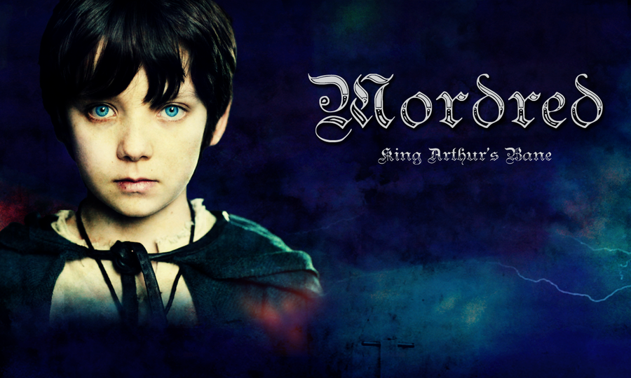
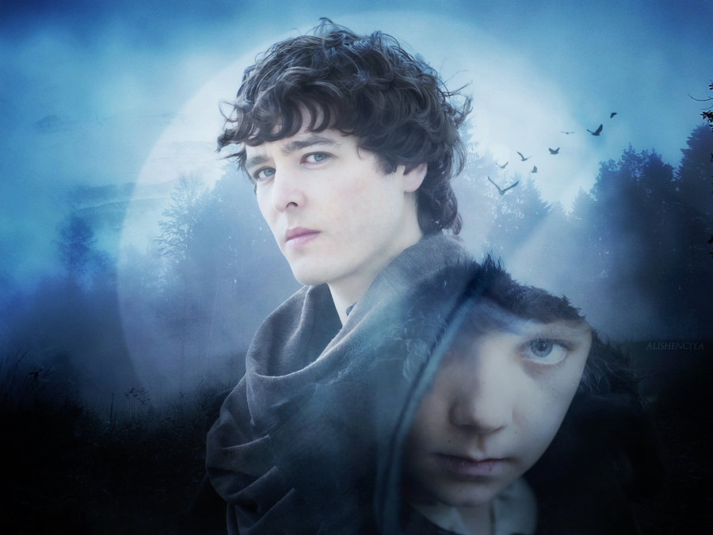
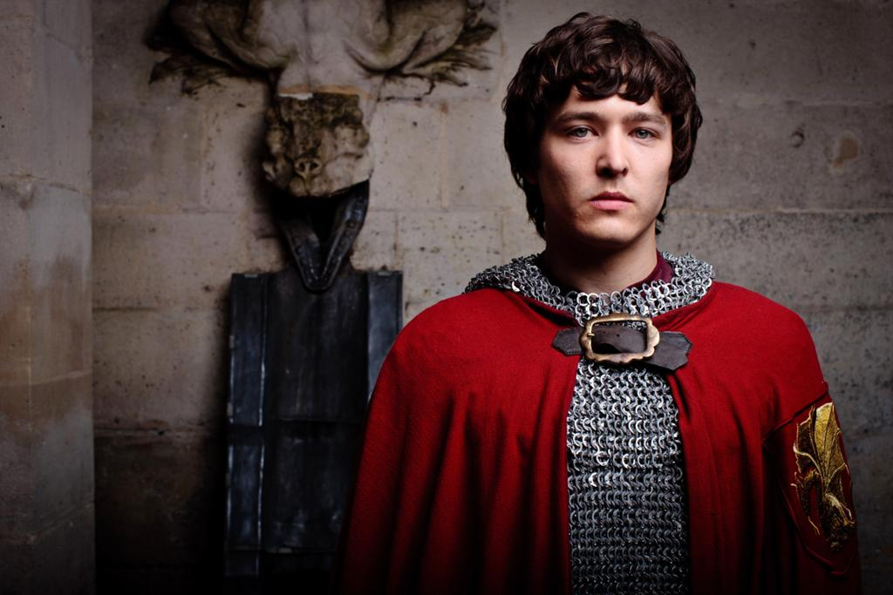

| Acasă | Scurt istoric | Galerie foto | Bibliografie | Date de contact |
| Cavalerii Mesei Rotunde |
| Excalibur |
| Merlin |
| Regele Arthur |
| Guinevere şi Lancelot |
| Mordred |
| Regele Arthur în lumea modernă |
| Falsul rege Arthur |
| Dovezi ale existenţei sale |
Desi Arthur a fost ales regele Angliei, au trecut multi ani pana cand a fost pe deplin recunoscut si acceptat ca rege. Unul dintre nobilii revoltati, Loth of Lothian, i-a oferit lui Arthur mana frumoasei Morgause si cei doi au avut un copil impreuna. Arthur nu stia insa ca Morgause este de fapt sora lui, fiica lui Gorlois si Ygraine . Merlin a prezis ca Mordred, baiatul nascut din aceasta relatie incestuoasa, va cauza sfarsitul lui Arthur si al regatului sau. De teama ca asta s-ar putea intampla, Arthur da ordin ca toti nou-nascutii sa fie imbarcati pe o corabie si lasati pe mare. Se spune ca in momentul lovirii corabiei de niste stanci, toti copiii si-au gasit sfarsitul. Toti, mai putin unul si acela era Mordred. Un om bun la suflet a avut grija de el pana cand baiatul a crescut suficient cat sa revina la curtea tatalui sau, cautand razbunare. Profetia lui Merlin avea sa se implineasca. Viata lui Arthur a fost plina de minciuni si de tradari. Sotia lui, Guinevere, s-a indragostit de Sir Lancelot, iar Mordred i-a acuzat in public de adulter si tradare. Lancelot fuge in Franta , insa Arthur il urmareste si are loc o lupta sangeroasa. Intre timp, la Camelot, Mordred preia tronul lui Arthur, in absenta acestuia. Arthur si cavalerii sai fideli il infrunta pe Mordred si pe oamenii acestuia pe campul de lupta din Camlann. Pasind printre trupurile neinsufletite ale cavalerilor sai, Arthur isi raneste mortal fiul, dar Mordred, cu ultimele puteri, il strapunge si el cu sabia pe Arthur. Regele ranit este dus pe malul unui lac fermecat, intr-o capela construita de Iosif de Arimathia pe insula mistica Avalon. Nimeni nu stie ce s-a intamplat cu regele de cand a fost dus pe acea insula misterioasa, insa legenda vorbeste despre o intoarcere a lui Arthur din valea Albionului atunci cand poporul va avea din nou nevoie de un protector. |
|  |  |
 |